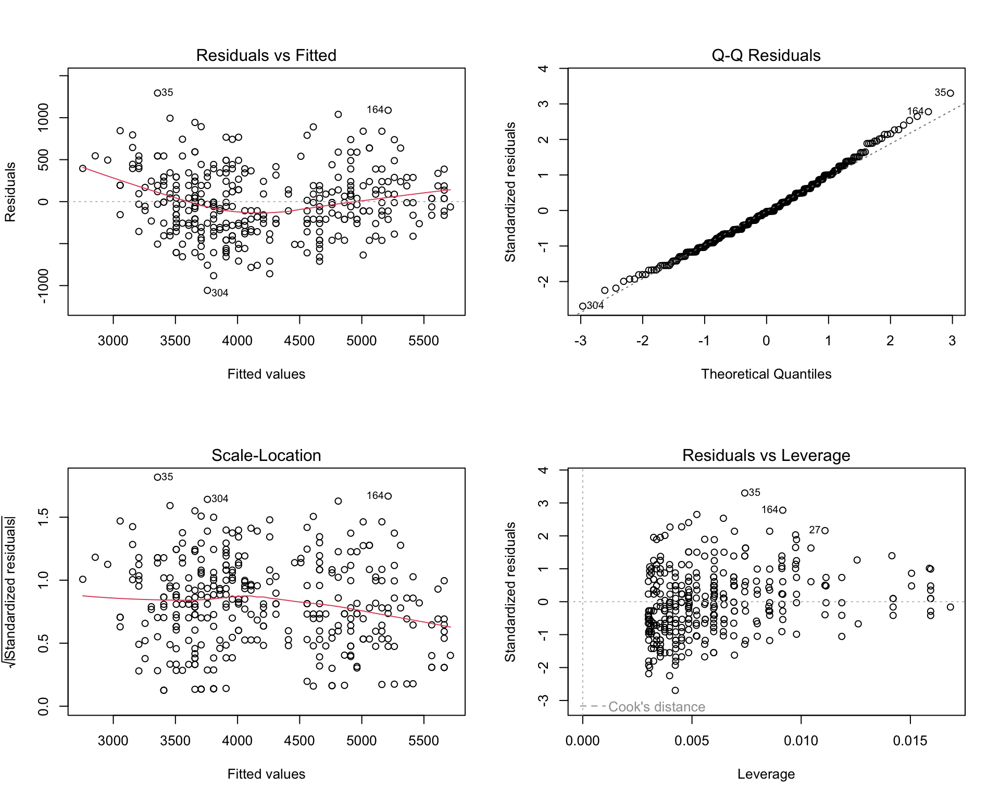
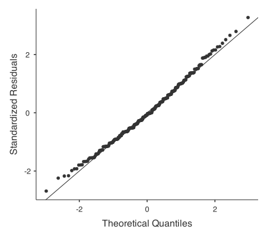
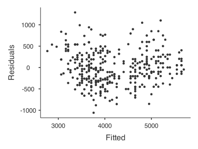
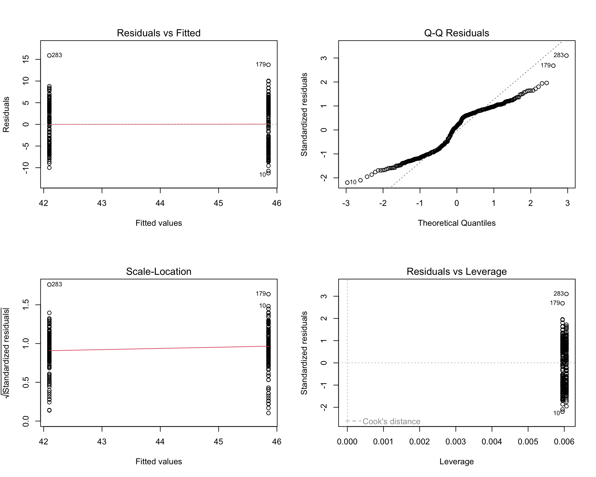

Model fitting and assumptions
Introduction
Use this resource while working through the Week 3 practical. It provides worked examples of fitting models and checking their assumptions.
When we fit a model under the general linear model framework, we make assumptions about the data. If those assumptions are violated, the results of our tests might not be reliable.
The examples use R code and Jamovi output, so you can use the approach that best fits your group’s workflow. We use the palmerpenguins dataset, which contains data on three penguin species from the Palmer Archipelago in Antarctica.
1. A general linear model with a continuous predictor
Let’s examine the relationship between a penguin’s body mass and its flipper length. We begin by thinking about how these two variables might be related and construct the model. Words are fine; the general linear model will work out the details once it is fitted!
Body mass is likely to be related to flipper length. We should be able to use flipper length to predict body mass.
\[ \text{body\_mass\_g} \sim \text{flipper\_length\_mm} \]
Imagine if flipper length were categorical (e.g., short, medium, long). We could still model the relationship with body mass, but the approach would change. We will need to use “dummy variables” to represent the categories and then determine the differences in body mass between these categories. This is explained in Lecture 3b when there are just two categories, and in Lecture 4b next week for more than two categories.
The data types for our variables are as follows:
body_mass_g: Continuous numericflipper_length_mm: Continuous numeric
Since we are fitting a continuous outcome variable (body_mass_g) with a continuous predictor (flipper_length_mm), our general linear model will look at how body mass changes with flipper length.
Checking assumptions with diagnostic plots
We can generate a set of standard diagnostic plots in R, Jamovi and most other statistical software packages when we fit a general linear model. For example, below is an output in R.
Interpreting the plots
- Residuals vs Fitted: Checks for linearity. Points should be randomly scattered around zero. A curved pattern means the relationship may not be linear. Here, the scatter looks random, so linearity is fine.
- Normal Q-Q: Checks if residuals are normally distributed. Points should follow the dashed line. Ours do, so normality is met.
- Scale-Location: Checks for equal variance. Points should be evenly spread, and the red line should be flat. Our plot shows consistent spread, so variance is fine.
- Residuals vs Leverage: Identifies influential points. Points outside the red dashed lines are influential. We have none, so no concerns.
In Jamovi, no specific module is necessary to perform a simple linear regression, so we can use the built-in regression tool to fit the model and check the assumptions. Importantly, there are fewer options to assess the assumptions compared to R, but this does not necessarily mean that the checks are less rigorous.


2. A general linear model with a categorical predictor
In this case, we are interested in examining the relationship between a penguin’s bill length and its sex (male or female). We can use a general linear model to assess whether there are significant differences in bill length between the two sexes.
The model can be expressed as:
\[ \text{bill\_length\_mm} \sim \text{sex} \]
This scenario is often handled with a two-sample t-test, which is a specific application of the general linear model. Because of this, we can check its assumptions by fitting an equivalent linear model and examining the same diagnostic plots!
Checking assumptions

Why are the plots “weird” looking? Can you explain the patterns you see (even though the assumptions are met)?
Jamovi
You can perform a two-sample t-test in Jamovi, but the diagnostic plots are not as readily available. This is why the GLM approach is preferred – model assumptions are standardised and much easier to check.
Summary
- General linear models are a flexible framework for modeling relationships in place of traditional statistical tests.
- They allow for the inclusion of both continuous and categorical predictors, making them suitable for a wide range of research questions.
- By checking the assumptions of these models using diagnostic plots, we can ensure the validity of our statistical conclusions.